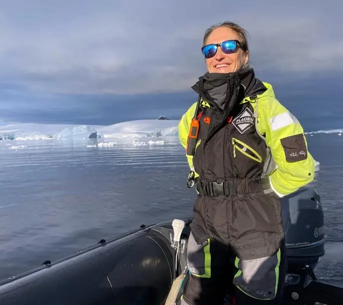
Jenny Green
Expedition Leader · Germany / Costa Rica南极经验丰富的探险领队，长期从事极地航线、海洋保护和自然教育。
1908 年开放，是世界著名歌剧院之一，以声学效果和欧洲折衷主义建筑闻名。
前身是 1919 年开幕的剧院，后来改造为书店，舞台、包厢和穹顶壁画仍保留下来。
用 parrilla 烤架和牛肉文化认识阿根廷，第一顿正餐从一块牛排开始。
布宜诺斯艾利斯的政治中心，见证独立运动、总统府集会和现代阿根廷公共生活。
港口移民社区，以彩色街屋、探戈街头表演和足球文化成为城市最鲜明的表情之一。
Boca Juniors 主场，陡峭看台和高密度声浪让它成为南美足球文化的象征。
从港口贸易梦到现代城市图标，Puerto Madero 展示了布宜诺斯艾利斯不断重塑自己的方式。
最后用马黛茶和探戈收束这一天。幸运的是，罢工只持续 24 小时，过了 0 点后，我们得以正常飞往乌斯怀亚。
乌斯怀亚位于火地岛南岸、比格尔海峡北侧，是火地岛省的首府。它从早期传教点、流放地监狱和海军据点逐渐发展为今天的港口城市，也是许多南极航线的起点。
这是一座非常小的海港城市，山和海把城区压得很窄，生活几乎围绕一条主干道展开。港口停靠着邮轮、探险船和补给船，城市感很朴素，却因为南极航线、风雪和远山有一种“旅程边界”的气质。
公园位于阿根廷国土最南端，与智利隔着比格尔海峡相望。森林、湖泊、泥炭地和海湾交织在一起，这里的风景不是开阔的热闹，而是冷、湿、安静的边境感。
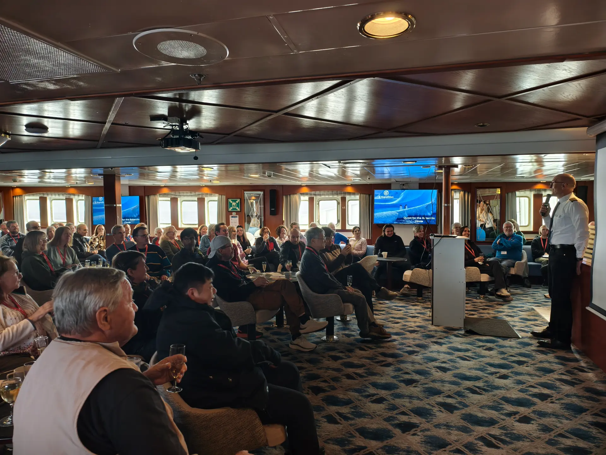
负责本次南极圈航线的探险旅行运营，组织船上讲座、登陆、冲锋艇巡航和极地体验。

南极经验丰富的探险领队，长期从事极地航线、海洋保护和自然教育。
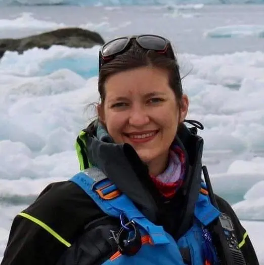
熟悉南美旅行和极地运营，关注历史、自然与可持续旅游。
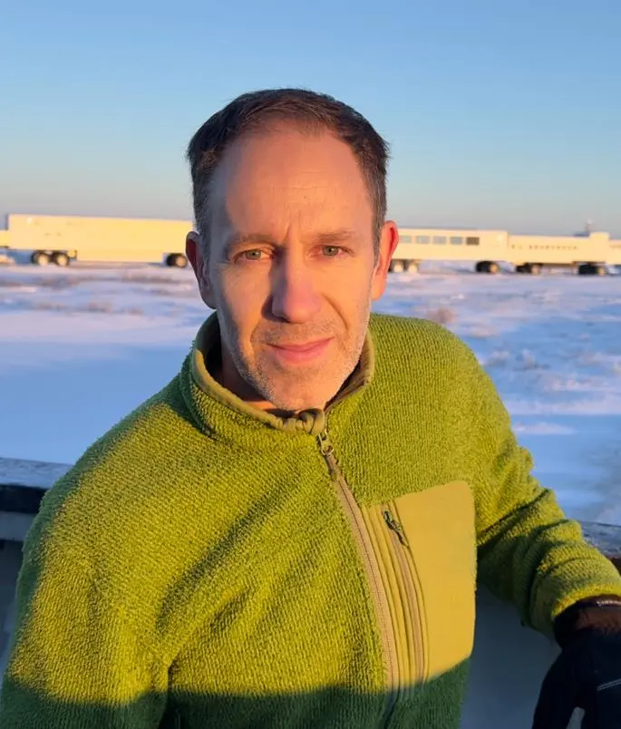
摄影师和写作者，擅长野生动物、探险摄影和影像叙事。
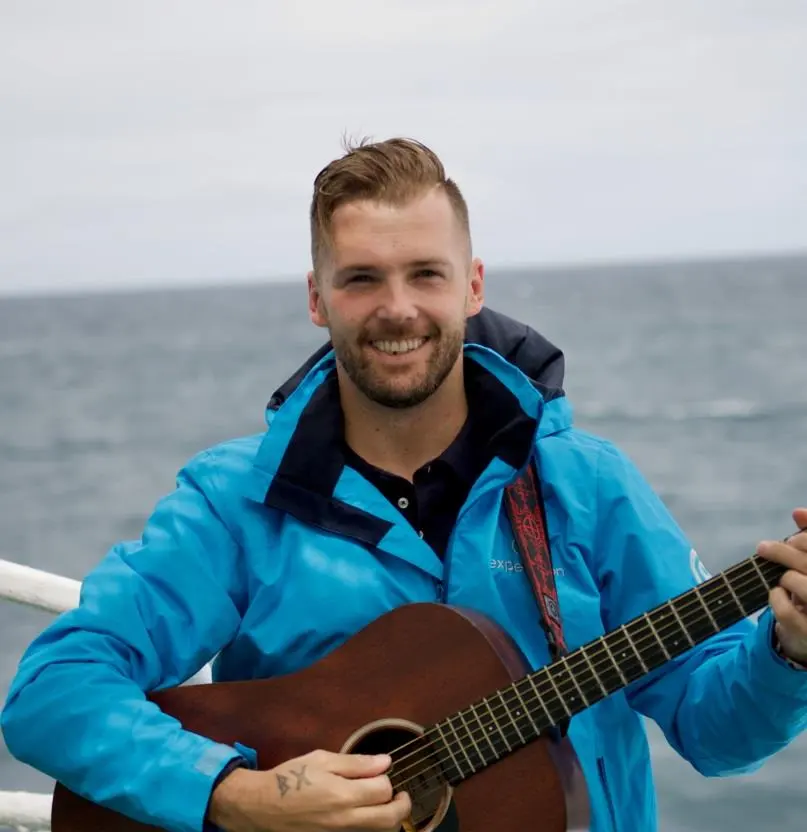
音乐人和极地自然向导，擅长用故事、音乐和自然体验连接旅客。
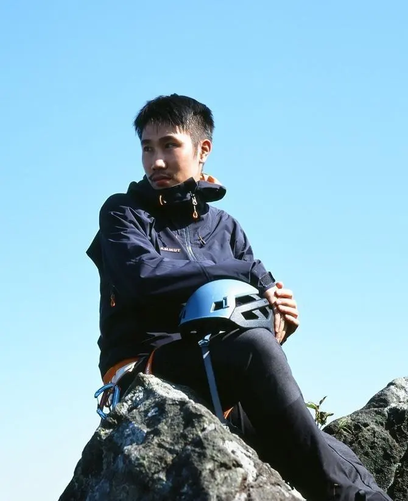
香港登山者和纪录摄影师，负责露营、户外协调和极地活动支持。
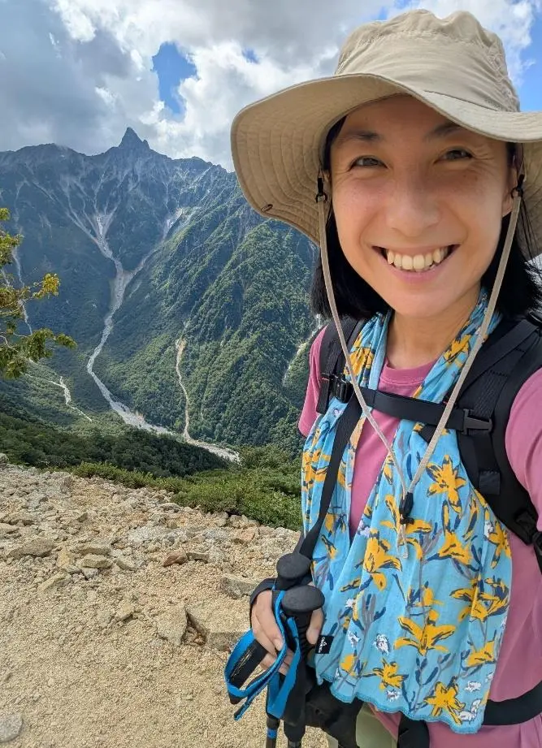
香港生态教育工作者，擅长自然解说、生态旅行和户外体验设计。
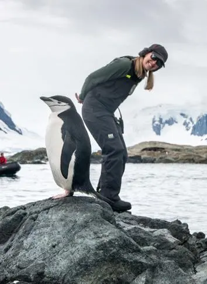
来自加拿大西海岸，具备海上生态旅游、船艇操作和皮划艇带队经验。
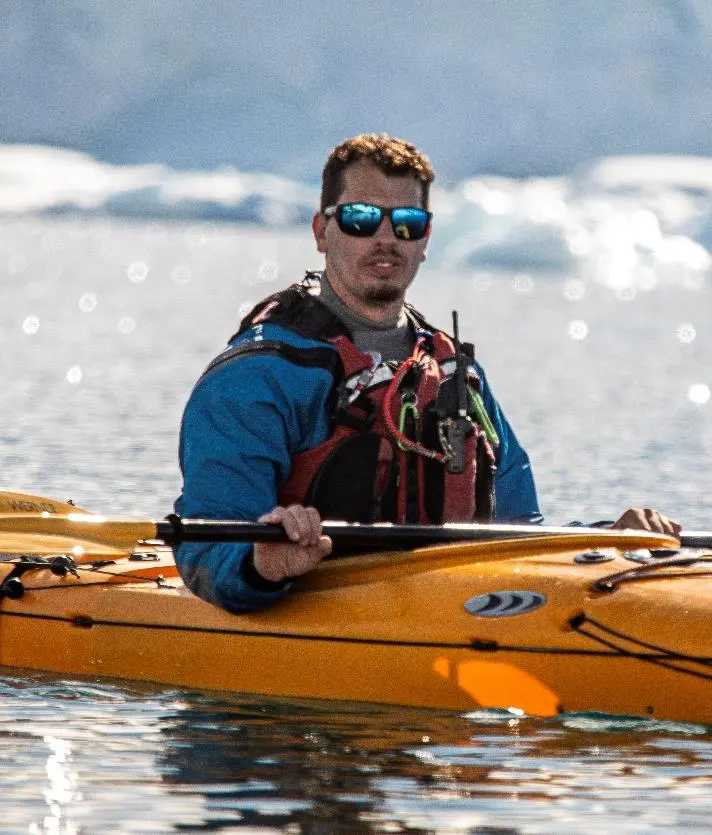
阿根廷皮划艇向导和自然向导，熟悉巴塔哥尼亚、瀑布和户外探险。
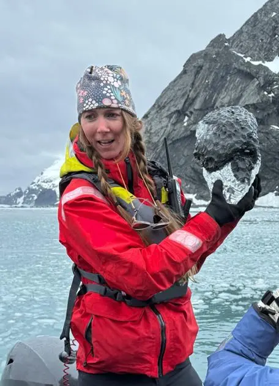
地质与极地科研支持背景，曾在高纬度研究站和冰盖项目工作。
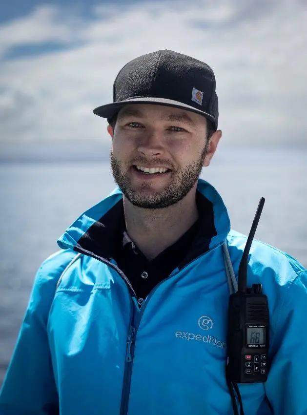
长期从事鲸类、海洋生态教育和探险行业培训。
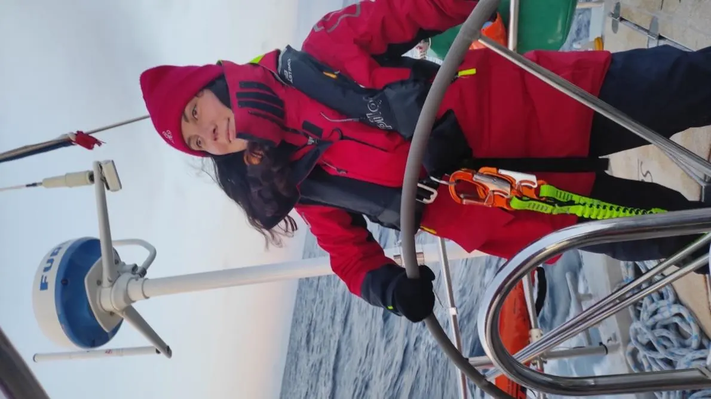
人类学和环境研究背景，热爱科学、文化与自然观察。
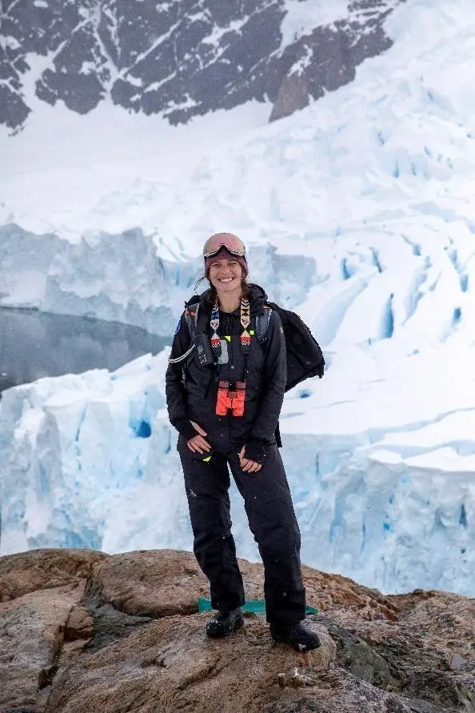
探险协调员，参与船上活动、登陆安排和团队运营支持。
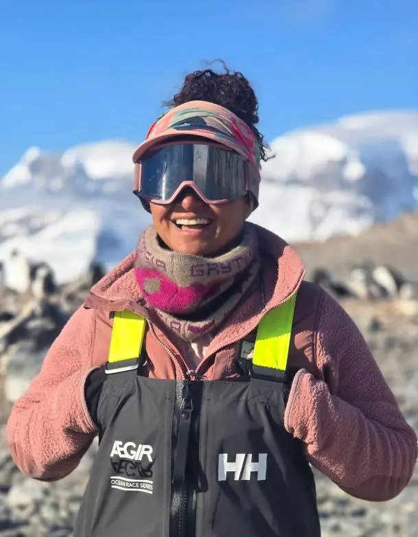
长期在智利和巴塔哥尼亚工作，擅长徒步、自然解说和冲锋艇驾驶。
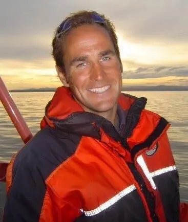
有二十年观鲸和小船运营经验，关注鲸类保护、海洋环境和文化多样性。
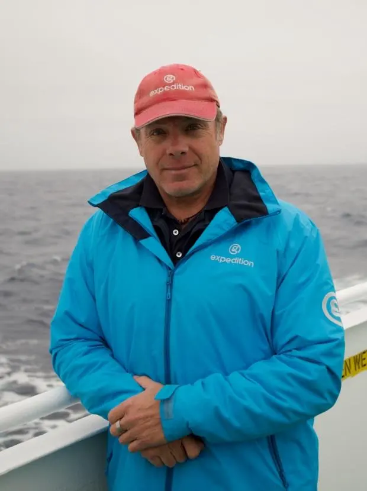
资深鸟类学者和探险讲师，拥有多年七大洲探险邮轮带队经验。
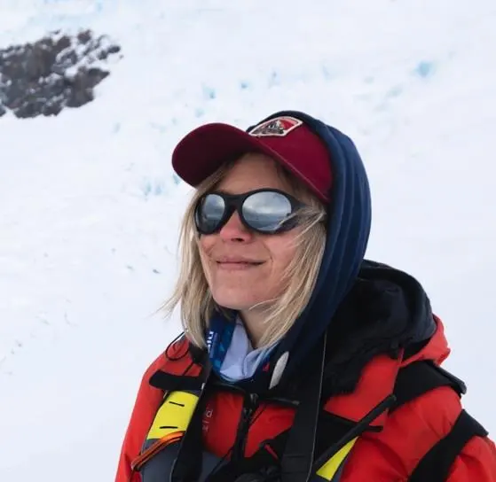
历史学者，负责分享极地探索、人文历史和航线背景。
穿越 Drake Passage 后，清晨抵达 South Shetland Islands。这一天完成了南极第一次登陆：上午在 Half Moon Island 观察企鹅与海岸生物，下午驶入 Deception Island 的火山口，在 Whalers Bay 走进捕鲸站遗址与黑色火山海滩。
Livingston Island 旁的小型岩岛，约有 3,300 对 Chinstrap penguin 在此繁殖；这里也有 Antarctic tern、Brown skua、Kelp gull、Wilson's storm-petrel 和 Imperial shag 等繁殖鸟类，近岸还能看到 fur seal。岛西南侧可望见阿根廷季节性 Camara Station，kayak 队也在这里完成第一次南极划行。
下午抵达 Deception Island 的 Whalers Bay，这是 South Shetlands 最非凡的地点之一。船只穿过 Neptune's Bellows 这条狭窄水道，直接驶入一座活火山被海水淹没的破火山口（caldera），这段航行本身就十分震撼。Deception Island 由美国海豹猎人 Nathaniel Palmer 命名，因为通往内湾、今日 Port Foster 的入口具有迷惑性。登岸后，我们探访了 Hektor Whaling Company 在 20 世纪初捕鲸作业留下的荒凉遗迹，以及 1944 至 1969 年驻扎于此的 British Antarctic Base B；1969 年火山喷发造成严重破坏，并最终导致基地撤离。许多人还徒步登上 Roberts Hill，黑色火山海滩与破火山口的开阔视野，是这段攀登最壮观的回报。
Orne Harbour 位于 Antarctic Peninsula 西岸，冰川、山峰和海湾相互包围。Zodiac 巡航时，我们看到 Chinstrap penguin 在水中游动；返航时风势增强，让回船过程比之前几次更刺激有趣。这里另一大亮点，是背景中广阔而轰鸣的冰川。从水面和徒步高处，都能持续听见冰川开裂、落水和雷鸣般移动的声响；它一边缓慢向海推进，一边不时崩解入海，令人兴奋。
Cuverville Island 位于 Errera Channel，是一次特别的登陆点，也是 Antarctic Peninsula 北部最大的 Gentoo penguin 群落之一所在地；岛岸与冰山构成典型南极半岛风景。
夜晚来到 Leith Cove 进行 Antarctic camping，在冰雪海岸边扎营过夜，用更安静也更直接的方式感受南极夜色。
Neumayer Channel 分隔 Anvers Island、Wiencke Island 与周边岛屿，航道两侧山峰和冰川密集，是南极半岛经典航行景观。
Port Lockroy 是著名的 Penguin Post Office，最初由英国人在二战期间作为 Operation Tabarin 的一部分建造，后来用于科学研究，如今由 UK Antarctic Heritage Trust 管理，作为博物馆和商店开放；附近 Jougla Point 适合观察企鹅、遗迹和海湾景色。
Lemaire Channel 以狭窄水道、陡峭山峰和漂浮冰山闻名，是南极半岛最具标志性的航行通道之一。
船只继续向南，并在上午跨越南极圈。这一刻象征着航程进入更高纬度，也是一条许多极地旅行者期待抵达的地理界线。
跨越南极圈后进行 Polar plunge，在冰冷海水中完成一次短暂而难忘的极地跳水。
在 20-30 节风中，我们穿行于海豹与雄伟冰川之间；风也慢慢把海冰推开。两个小时后，一条狭窄的窗口出现，足够船长尝试向南穿越这条少有船只到访的水道。
Bongrain 和 Lainez Points 位于南极半岛更南段，开阔的冰川、山地和海岸构成当天的登陆背景。勇敢坐上 Zodiac 的人都记得那场风浪：风强、水花大，衣服和头发几乎一起湿透；但在混乱中驾驶 Zodiac 又像一趟没有安全带、却多了许多海水的过山车，大家一路笑到对岸都能听见。
下午天气突然转好，天空放晴，我们得以探索 Dog Leg Fjord。这里的景色像大自然亲手完成的作品：可以在安全距离内接近冰川，看一条条冰川出口像巨大的冰瀑流入峡湾；岸边的草、苔藓和地衣则像南极微小却坚韧的丛林。
夜晚以船上 BBQ 收束这一天，在风浪、冰川和峡湾之后，用热食与轻松的气氛把一天的冒险慢慢放下来。
经过一段较长的 Zodiac 开阔水面航行后，我们抵达一处平静海湾，并由一群 Weddell Seals 迎接。沿岩石海岸短短步行，便看到最后仍在换羽的 Adelie penguins 依附在岩石与雪崖之间；再往前则是 skua nesting sites。幸运的是，我们遇见几只可爱、毛茸茸的 Brown Skua chicks。它们在警觉父母保护下从容走动，也让摄影爱好者收获满满。几乎所有人都带着冒险精神继续前行，Fiver (Sarah Keenan) 带我们开辟新路线，登上一处过去从未使用过的 ridge viewpoint。在 Adelie colony 高处，我们看到了船只与周围群山的壮丽景色。
Stonington Island 位于 Northeast Glacier 外海，是美国最古老的南极科考站 East Base 与英国 Base E 的所在地。这些基地早已废弃，交给时间与风雪，却仍保存完好，像一堂被壮阔全景包围的历史课。这里尤其值得铭记：Jackie Ronne 和 Jennie Darlington 在 1946 至 1948 年间成为首批在南极越冬，并在南极生活满一年的女性。
Detaille Island 位于 Lallemand Fjord，曾有英国 Station W 科研站。Base W 建于 1956 年，原计划用雪橇犬穿越海冰，把研究人员送往邻近的南极半岛；但海冰过于不稳定，雪橇犬始终难以真正投入研究运输。1959 年，补给船 Biscoe 被厚冰阻在约 50 公里外，即使请求附近两艘美国破冰船协助也无法靠近，站内食物和生活必需品耗尽，基地只得匆匆撤离。
当天最特别的体验，是走进那座废弃的旧科考站：生活痕迹几乎停留在当年运作时的模样。我们看见食物、书籍，甚至一副 Scrabble 棋盘。撤离故事里还留下了雪橇犬 Steve 的传奇：它途中挣脱绳索、奔回 Detaille Island，三个月后却奇迹般出现在 100 公里外的 Horseshoe Island Base，依然活力十足。
总计RMB 230,666.80